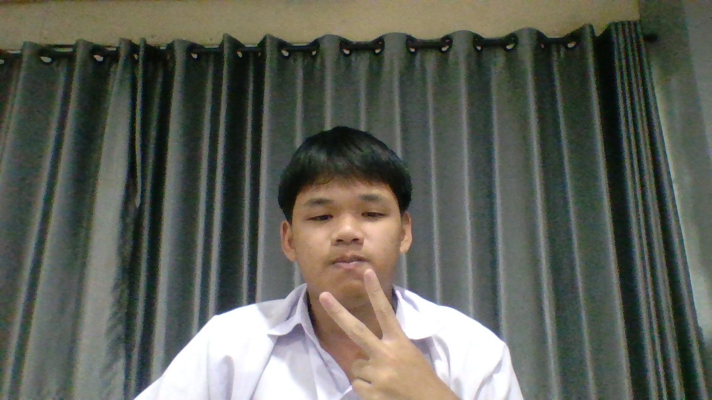

แฟ้มสะสมผลงาน (Portfolio)


สวัสดีครับ! ผมชื่อ นายธนภัฎ ภู่พูลเพียน (Thanapat Poopoonpain)
แฟ้มสะสมผลงานเพื่อการเข้าศึกษาต่อระดับอุดมศึกษา

สวัสดีครับ! ผมชื่อ นายธนภัฎ ภู่พูลเพียน (Thanapat Poopoonpain)
แฟ้มสะสมผลงานเพื่อการเข้าศึกษาต่อระดับอุดมศึกษา